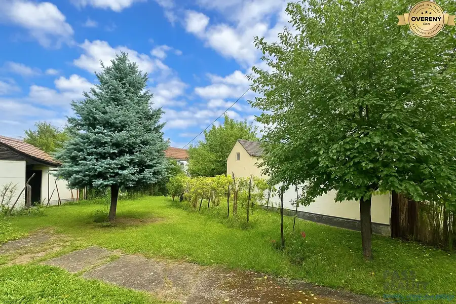
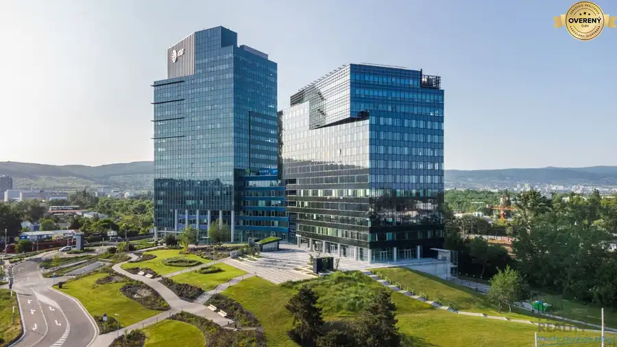

PRENÁJOM exkluzívnych priestorov 318 m2 TECHNOPOL, Kutlíkova ul.
Lúky, Bratislava
- Plocha318 m²
- Poschodie4.
O nehnuteľnosti
PASS REALITY ponúka na prenájom (ne)priechodné kancelárie v biznis suite Technopol v Petržalke. Zrekonštruované klimatizované priestory sa nachádzajú na 4. poschodí vo výškovej budove so spoločnou recepciou a kontrolovaným vstupom v komplexne vybavenom administratívnom priestore.
Kancelárie je možné flexibilne spájať a deliť podľa požiadaviek a potrieb klienta.
Na každom poschodí je k dispozícií sociálne zariadenie a kuchynka. Prenajímateľ ponúka záujemcom možnosť oddeliť si a uzavrieť časť poschodia aj s chodbami, prípadne prebudovať časť poschodia na open space. Výraznou výhodou takéhoto riešenia pre klienta je okrem maximálnej flexibility aj cena, keďže nájomné sa aj v takomto prípade platí len za čistú plochu pôvodných kancelárií.
Do budovy je zabezpečený bezbariérový prístup, k dispozícii je nákladný výťah, skladový a logistický priestor. Parkovanie je možné v podzemnej garáži alebo na vonkajších parkoviskách s kapacitou 500 stojísk. Parkovanie návštev je možné takisto na týchto parkoviskách, pričom prvých 30 minút státia je zadarmo.
V administratívnom centre sa nachádza recepcia, kongresové centrum s kapacitou do 400 osôb (a možnosťou rozdelenia na 3 časti), 2 prepojiteľné salóniky pre 26 osôb, kongresová reštaurácia s cateringovými službami pre 200 osôb (vo všetkých týchto priestoroch majú nájomníci 15% zľavu), notár, gastro samoobslužná jedáleň (4% zľava pre nájomníkov), lekáreň, poštové služby s podateľňou a niekoľko obchodných prevádzok.
Budova sa nachádza v tichom, príjemnom prostredí, s vynikajúcou dostupnosťou z diaľničného obchvatu, ako aj z hraničných prechodov do Rakúska a Maďarska. Bezprostredne pri budove sa nachádzajú 3 zastávky MHD, nová električková trať, umožňujúce priame spojenie so všetkým časťami Bratislavy.
Cena: 15eur / m2 + 6,70Eur/m2 energie + DPH.
Cena za priestor: 6 900,60Eur + DPH
Parkovanie:
vonkajšie - 50Eur + DPH/mesiac
vnútorné - 90Eur + DPH/mesiac
Cena energií a služieb je vyúčtovateľná a zahŕňa:
- denná recepcia
- dodávka elektriny, vody, plynu
- správcovské služby
- upratovanie kancelárskych priestorov
- klimatizácia, výťahy
- strážna služba SBS 24 hodín
- bežná údržba, opravy
- odvoz odpadu
- poistné náklady
Depozit: 2 x mesačná platba
Zmluva sa uzatvára na dobu neurčitú s výpovednou lehotou 3 mesiace.
Províziu RK neplatíte.
Výborná dostupnosť do centra.
Veľmi dobrá občianska vybavenosť – nákupné centrá, školy, škôlky, ihriská, lekár.
Výborná dostupnosť MHD.
Kontaktujte: Ing. Ivana Maderová - ,
PASS
Reality – reality, ktoré Vám
pass
ujú !
Parametre
| Celková rozloha | 318 m² |
|---|---|
| Úžitková plocha | 318 m² |
| Poschodie | 4/vyššie poschodie |
| Plyn | áno |
| Kanalizácia | áno |
| Internet | iné |
| Garáž | áno |
| Výťah | áno |
| Parkovanie | vlastné vyhradené |
| Postavené z | Zmiešané |
| Energetický certifikát | nie |
| Dátum zverejnenia | 31. 3. 2026 |
Kde to je
Mohlo by Vás zaujímať

Pozemok6 376 600 €PREDAJ stavebný pozemok v Devínskej Novej Vsi, Záveterná ul. Devínska Nová Ves, Bratislava 703 m² Pozemok má výmeru 703 m2 , stojí na ňom starší rodinný dom a menšie stavby - sklad, stodola... všetko je určené na zbúranie. Má netypický tvar /viď.… Nebytové priestory8
Cena dohodouPrenájom kancelárií v LAKESIDE PARK 01, Tomášikova ul.
Nové Mesto, Bratislava
80 m²
PASS REALITY ponúka na prenájom administratívne priestory vo vysokom štandarde s možnosťou prispôsobenia sa náročným požiadavkám klienta. Výmery…
Nebytové priestory8
Cena dohodouPrenájom kancelárií v LAKESIDE PARK 01, Tomášikova ul.
Nové Mesto, Bratislava
80 m²
PASS REALITY ponúka na prenájom administratívne priestory vo vysokom štandarde s možnosťou prispôsobenia sa náročným požiadavkám klienta. Výmery…

Nebytové priestory8 Cena dohodouPrenájom kancelárií v LAKESIDE PARK 02, Tomášikova ul. Nové Mesto, Bratislava 80 m² PASS REALITY ponúka na prenájom administratívne priestory vo vysokom štandarde s možnosťou prispôsobenia sa náročným požiadavkám klienta. Výmery…